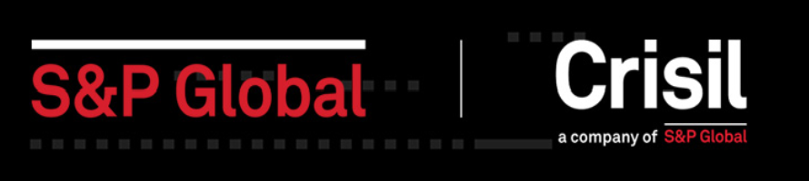
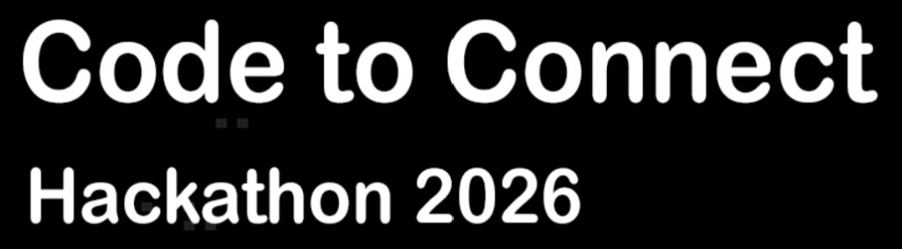
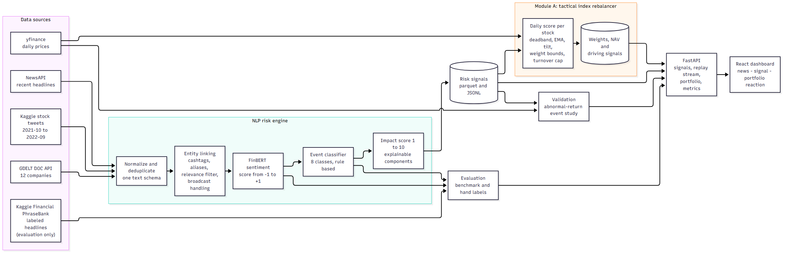
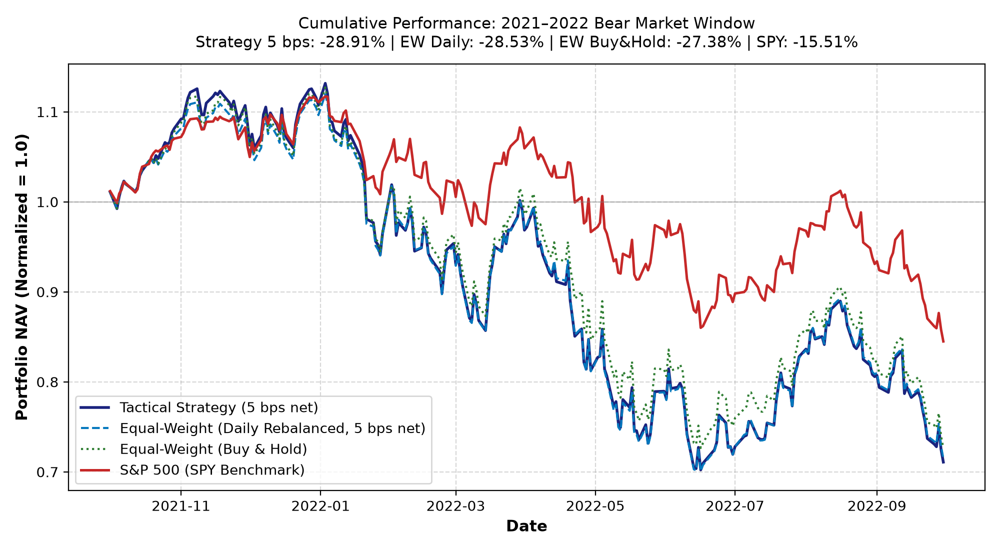

| event_type | Regulatory | 1 of 8 classes, rule-based |
| sentiment_score | -0.80 | FinBERT tone, range [-1.0, +1.0] |
| confidence | 0.90 | softmax conviction, [0.0, 1.0] |
| impact_score | 7.85 | severity, [1.0, 10.0]: Event 35% + Sentiment 30% + Credibility 20% + Volume 15% |
| trading_action | REDUCE | downstream suggestion: BUY, REDUCE or HOLD |

| Event severity | 35% | Regulatory = 0.9 |
| Sentiment strength | 30% | |s| × c = 0.72 |
| Source credibility | 20% | GDELT 0.85 |
| Mention volume | 15% | 0.40 (illustrative) |
| EMA smoothing half-life 2.0 days |
A brief burst of news cannot cause an unstable, immediate change. |
| Deadband ±0.20 |
Small signals, likely mostly noise, are zeroed out. |
| Negative multiplier 1.25× |
Negative headlines get a 25% higher penalty (asymmetric risk aversion). |
| Weight bounds 3.57% (0.5×) to 14.29% (2.0×) |
No stock becomes too small or too large (e.g. concentration in TSLA). |
| Turnover cap 10% / day |
Limits how much the portfolio can trade in one day. |
| Transaction costs 5 bps |
Trading is not free: cost is deducted from net NAV. |
| Fallback equal weight |
Missing market data reverts weights to 7.14%. |
| Q1 | Q2 | Q3 | Q4 | Q5 | Q5 − Q1 | |
|---|---|---|---|---|---|---|
| Count | 415 | 414 | 415 | 414 | 414 | 2,072 |
| Mean impact | 2.70 | 3.50 | 4.63 | 5.15 | 6.36 | +3.66 |
| Mean |CAR(0,2)| | 2.46% | 2.52% | 2.81% | 3.10% | 3.89% | +1.43% |

| Strategy | Return | Sharpe | Max DD |
|---|---|---|---|
| Tactical (5 bps) | -28.91% | -0.9209 | -37.95% |
| Equal-wt daily | -28.53% | -0.9092 | -37.39% |
| Equal-wt buy & hold | -27.38% | -0.9323 | -35.56% |
| SPY (S&P 500) | -15.51% | -0.7085 | -24.37% |